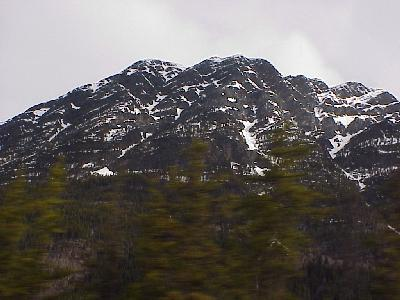
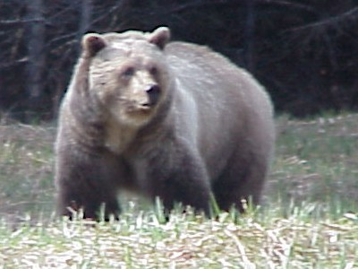
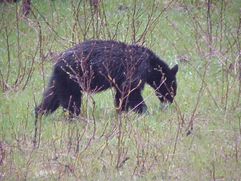
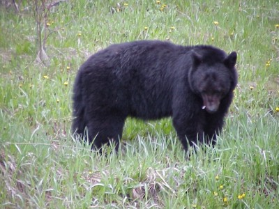
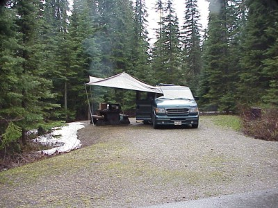

May 22, 2727 miles
| We started the day checking out of the cabins at about 9:00. | |
| More mountains today. And more mountains, and more mountains. Add a few waterfalls and some huge farms, reminiscent of the plains. |  |
| More elk, but I think we have had our fill of them, we didn't even slow down for a picture, but the Grizzley Bear slowed us down a little. |  |
| Not to be out done by its larger cousin, we quickly saw some seven black bears, some little guys like this one, |  |
| and some just a little bigger. |  |
| After how perfect last night was, with staying in a
cabin and all, I guess we have to pay for it tonight. It
rained enough to make us pull out the rain fly and it was
a little on the cold side, you could see your breath, but
the park was nice, and the sites big. This is the Saturday night of Canada's big "get out in the wild and yell" weekend (Victoria Day), so I guess we were lucky to find a site. |
 |
| We checked into the campground, at
Whisker's Provincial Park, north of Prince George, at
about 5:30 PM, after traveling 332 miles. Wildlife for the day included: Grizzley Bear (1), Black Bear (7), mule deer and a few more elk. |
|